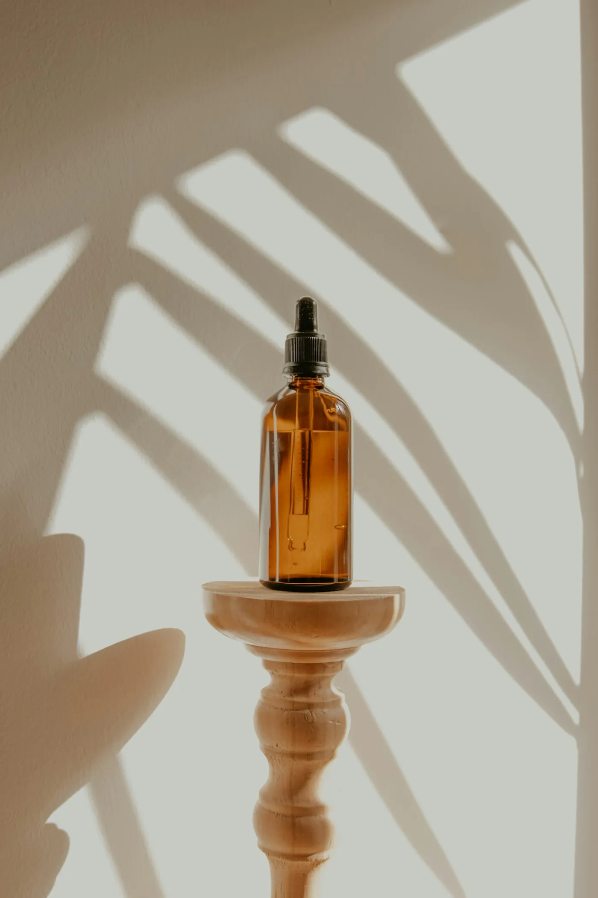

Quem tem melasma conhece a sensação: no inverno a mancha clareia um pouco e dá vontade de relaxar no protetor. É justamente aí que ela volta.
O que é o melasma
O melasma é uma mancha acastanhada que aparece principalmente na testa, nas maçãs do rosto e acima da boca. Tem relação com hormônios, genética e exposição à luz, e é mais comum em mulheres entre 20 e 50 anos.
É uma condição crônica: o tratamento controla e clareia, mas a tendência de escurecer continua. Por isso a prevenção diária pesa tanto quanto as sessões na clínica.
Não é só o sol do verão
Três coisas estimulam o melasma o ano todo:
- Radiação ultravioleta, que chega mesmo em dia nublado.
- Luz visível, incluindo a das janelas e, em menor grau, a de telas.
- Calor, como o do fogão, da sauna e do carro parado no sol.
Por que o protetor com cor
Os pigmentos dos protetores com cor, como o óxido de ferro, ajudam a bloquear a luz visível, que o filtro comum não segura. Para quem tem melasma, costuma ser a melhor escolha, inclusive dentro de casa.
Como usar no dia a dia
- Aplique uma camada generosa pela manhã, no rosto inteiro, orelhas e pescoço.
- Reaplique a cada 3 horas se estiver perto de janela ou na rua.
- Use chapéu e óculos nos horários de sol forte.
- Evite banhos muito quentes no rosto e sauna.
E o tratamento?
Na clínica, laser, peelings e clareadores de uso em casa podem ajudar, sempre com indicação médica. Cada pele responde de um jeito, e o plano é ajustado nos retornos.

Este texto é informativo e não substitui uma consulta. A indicação de qualquer tratamento depende de avaliação individual. Responsável técnica: Dra. Marina Costa, CRM-SP 184.920 (fictício).
Leia também: Primeira avaliação: o que levar e o que perguntar · Todos os artigos